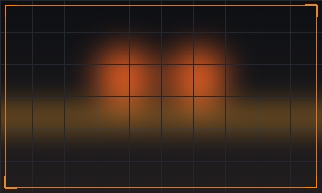
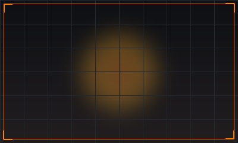
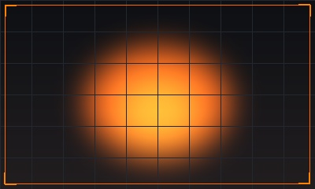
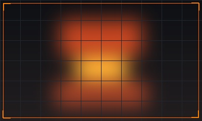
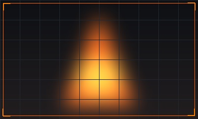
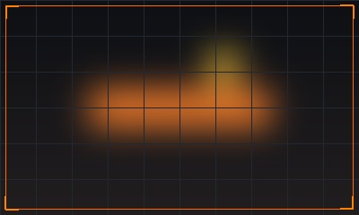

Maintenance Instrumentation
& Automation Engineer
18+ years of stated total work experience, including 16+ years of Gulf experience in maintenance, instrumentation, automation and troubleshooting across steel plants, rebar & coil rolling mills, steelmaking, sand casting and open-die forging.

Mohammad Khalilur Rahman
Experience • Expertise • Results

ABOUT ME
Turning Complex Challenges Into Reliable Solutions
I am a dedicated and results-driven Maintenance Instrumentation & Automation Engineer with 18+ years of stated total work experience, including 16+ years of Gulf experience in the steel industry. I specialize in plant maintenance, automation systems, troubleshooting and continuous improvement.
Career Objective: "To be part of a growth-oriented and challenging environment where technical, analytical and managerial skills can be utilized effectively, contributing to the growth of the company as well as professional development."
Problem Solver
Team Player
Continuous Learner
Safety Focused
18+
Years of Stated Experience
16+ Years Gulf Experience
- Steel Plants
- Rebar & Coil Rolling Mills
- Steelmaking (EAF / LRF / VOD)
- Sand Casting
- Open-die Forging
- Heavy Industrial Machining
WORK EXPERIENCE
Professional Journey
TCF
Current
Tuwaiq Casting & Forging
Maintenance Instrument and Automation Supervisor
- Joint venture of Dussur, Saudi Aramco, and Doosan (technical partner).
- Maintenance instrumentation and automation covering steelmaking, sand casting and open-die forging.
- Technology exposure: Siemens S7-1500, ET 200SP over PROFINET, ABB & Siemens protection relays, ABB drives, WinCC workstations.
SOLB
13+ Years
SOLB Steel Company (SOLB)
Maintenance Instrument and Automation – Senior Technical Role
- Comprehensive maintenance & automation in rebar and coil rolling mill steel plant.
- Fault/trip analysis, troubleshooting plant instrumentation, PLCs, HMI/SCADA, ABB AC/DC drives, sensors, encoders.
- Instrument calibration, preventive maintenance, breakdown rectification, shutdown management, spare parts coordination & technician task allocation.
AYS
Saudi Arabia
AL-YAMAMAH STEEL
Automation Engineer (Rolling Mill)
- Automation Engineer supporting rolling mill automation systems and associated control equipment.
- Supported maintenance and troubleshooting activities related to continuous rolling mill operation.
TATA
India
Tata Tiscon, Tata Iron & Steel
Maintenance Instrument & Automation Engineer (Rolling Mill)
- Maintenance instrumentation and automation for premier Tata Tiscon rolling mill operations.
- Equipment maintenance, fault identification, calibration, and troubleshooting in heavy rolling mill conditions.
- Earlier foundational role at Tata Iron & Steel Co. Ltd. (Jamshedpur, India).
TECHNOLOGY & SKILLS
Technical Expertise
PLCs (Siemens, ABB)
Control Architecture & Logic
HMI / SCADA (WinCC)
Operator & Process Workstations
AC/DC Drives (ABB, Siemens)
High-Power Industrial Motors
Process Instruments & Calibration
IMS Standard Precision Control
Electrical Diagrams & MV/LV
Power Distribution & Substations
Network & Field Devices
PROFINET & Industrial Ethernet
SOFTWARE & TOOLS
Software Proficiency
Siemens TIA Portal
S7-1500 & ET 200SP Programming
SIMATIC WinCC
HMI & SCADA Process Screens
STEP 7 SIMATIC Mgr
S7-300 / 400 & Ladder / STL Logic
Control Builder M
ABB PLC Engineering & Control
ABB / Siemens DriveWindow
Drive Tuning, Backup & Diagnostics
Wonderware InTouch V6
Process Visualization & OWS
IBA AG Analyser
High-Speed Signal & Trip Analysis
AutoCAD Electrical
Schematics & Wiring Diagrams
MS Office & Access
2000, 2003, 2007, 2011 Data Mgmt
Industrial Windows OS
Windows Server 2003, XP, 2000, Vista
WinCC Professional · WinCC Server · Comfort Panel
INDUSTRIAL SYSTEMS
Plant & Industrial Systems

Rebar Rolling Mill (Experienced)
Fully automatic high-speed mill designs by Danieli & SMS MEER; straight plain & deformed rebar 5-10mm.
View System Specs →

Coil Rolling Mill (Experienced)
Hot & cold coil rolling mill automation, laying heads, coilers, loopers, ABB ACS800 multi-drives & speed matching.
View System Specs →

Steelmaking (EAF, LRF, VOD)
Danieli DIGIMET automation, water cooling circuits, electrode control & WinCC workstations.
View System Specs →

Open-die Forging & Cut-and-Bend
SMS group heavy hydraulic presses (40/45 MN & 20/22.5 MN), Steefco cut-and-bend forming (8-40mm) & epoxy coating lines.
View System Specs →

Sand Casting
Heavy casting foundry molds, molten metal temperature instrumentation & safety interlocking.
View System Specs →

Heavy Industrial Machining
Precision turning, milling, and finishing of heavy forged billets and industrial steel parts.
View System Specs →
PROJECTS & RESPONSIBILITIES
Key Projects & Responsibilities
Plant Maintenance & Troubleshooting
Instrumentation, control & automation systems, fault analysis, and emergency breakdown repair.
Process Optimization
Fine-tuning automation parameters, reducing cycle times, minimizing line trips & saving energy.
Shutdown Planning & Execution
Planning weekly/fortnightly 8-12h shutdowns 4 days ahead; backlog clearing & turnaround management.
Team Supervision & SOPs
Assigning tasks, developing Standard Operating Procedures (SOPs), safety adherence & technician mentoring.
Spare-Parts Management
Purchase requisitions, quality inspection of incoming parts, inventory tracking & maintaining standby units.
EDUCATION & QUALIFICATIONS
Academic Background
Degree in Electronics & Communication Engineering
Shankara Institute of Technology, Jaipur • Univ. of Rajasthan
Click to preview certificate →
Three-Year Diploma in Electronics & Communication
Al-Kabir Polytechnic, Jamshedpur • S.B.T.E., Ranchi
Click to preview certificate →
PLC S7-300 Micro PLCs & Industrial Automation
A.K.P. & I.D.T.R. (Govt. of India Society), Jamshedpur
Intermediate (12th Grade) • Year 2001
J.I.E.C., Ranchi
Matriculation / S.S.E. (10th Grade) • Year 1999
B.S.E.B., Patna
Bachelor of Technology (B.Tech)
Verified Credential

SOFTWARE EXPOSURE
Software Exposure
Siemens & ABB
Siemens STEP 7 SIMATIC Manager, TIA Portal V17 & V18, and ABB Control Builder M
ABB & Siemens
ABB DriveWindow and Siemens DriveWindow
Process Automation
SIMATIC WinCC
Operator Interfaces
WinCC Professional (TIA Portal), WinCC Server, Comfort Panel, Wonderware HMI (InTouch)
Windows Platforms
Windows 2000, Windows Server 2003, Windows XP and Windows Vista
Productivity & Data
Microsoft Office 2000, 2003, 2007 and 2011, and Microsoft Access